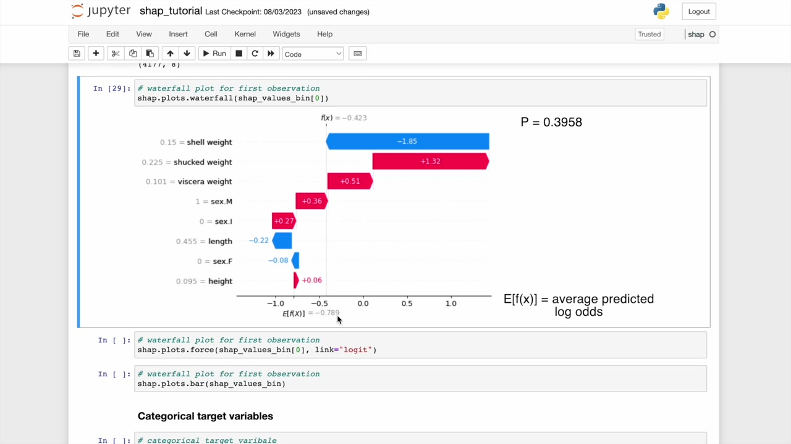
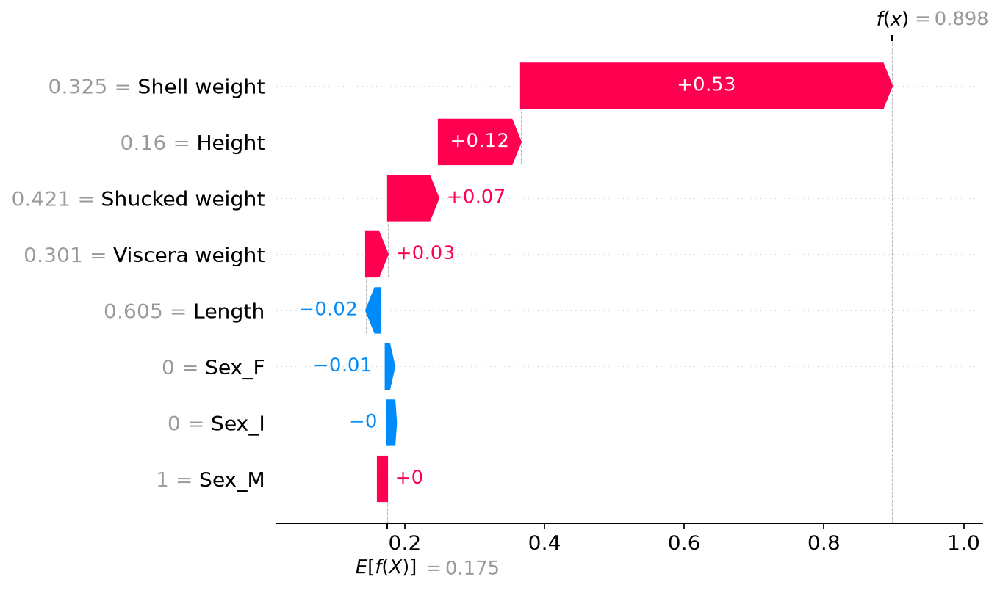

SHAP for Classification: Keep Track of the Output
Companion to A Data Odyssey’s video · Conor O’Sullivan
For the Abalone regressor, every contribution was measured in predicted rings. Classification introduces an extra step: the model may compute a numerical score and then convert that score into a probability. SHAP can explain different points in that process, so we must identify which output the contributions add up to.
The playlist uses binary and three-class versions of the same Abalone problem. We will do the same. The plots remain familiar; their units and array shapes need closer attention.
Run python classification.py with classification.py and example_data.py in the same directory, using the environment from Part 4. The script trains both classifiers and verifies their explanations. The excerpts below use its variables binary and multi for those fitted models.
Start with a binary target
Our binary target is 1 when the observed ring count exceeds the training set’s mean, and 0 otherwise. We calculate that threshold from the training partition only; in our split it is about 9.945 rings. The target asks whether the shellfish is above that threshold, not how many rings it has.
An XGBoost model trained with the binary logistic objective produces a raw margin $z$. Its predicted probability for class 1 is:
The function on the right is the sigmoid. In this model, the margin is log-odds: $z=\log[p/(1-p)]$. A margin of zero corresponds to probability 0.5. A positive margin corresponds to a probability above 0.5, and a negative margin to one below 0.5.
Add contributions on the scale being explained
With a raw-output explanation of this classifier, the baseline and contributions are in log-odds units. Add them first, then apply the sigmoid to the total:
from scipy.special import expit
raw = shap.TreeExplainer(
binary, data=background,
feature_perturbation="interventional", model_output="raw",
)(rows)
margins = raw.base_values + raw.values.sum(axis=1)
probabilities = expit(margins)
np.testing.assert_allclose(
probabilities, binary.predict_proba(rows)[:, 1], atol=1e-6
)For the first row in our saved run, the baseline margin is about 0.0607. The contributions add about 1.3610, giving a final margin of 1.4217. Applying the sigmoid gives a class-1 probability of approximately 0.8056.
The source video shows another fitted example: its endpoint is about −0.423, which converts to a probability of about 0.396. A negative endpoint is perfectly sensible because the chart is displaying log-odds, not a negative probability.


Do not apply the sigmoid separately to each bar and add the results. The sigmoid is nonlinear, so that calculation does not reconstruct the probability. A +1 contribution in log-odds also does not mean a one-percentage-point increase: the probability change depends on the score from which we start.
Probability explanations are a separate calculation
Classification explanations are not universally in log-odds. The output depends on the model and explainer settings. For this supported binary model, we can request model_output="probability" with an interventional background and calculate a probability-space explanation.
prob = shap.TreeExplainer(
binary, data=background,
feature_perturbation="interventional", model_output="probability",
)(rows)
np.testing.assert_allclose(
prob.base_values + prob.values.sum(axis=1),
binary.predict_proba(rows)[:, 1], atol=1e-6,
)Now a contribution of +0.03 means an additive contribution of three percentage points to the explained probability. This is newly computed for the probability output, not obtained by converting each margin contribution individually.
Even the baseline transformation needs care. The mean of predicted probabilities is generally different from the sigmoid of the mean margin. Our probability baseline is about 0.5300; the sigmoid of the raw-margin baseline is about 0.5152. Both are valid baselines for their respective output games.
For several classes, explain one score per class
For the multiclass example, define three fixed teaching bands: at most 8 rings, 9–11 rings, and at least 12 rings. These are convenient labels for the exercise, not validated biological age categories.
The XGBoost classifier produces one raw score, or logit, per class. Softmax converts the whole vector of logits into probabilities. If the logits are $z_0,z_1,z_2$, then the probability of class $k$ is:
A positive contribution to one class’s logit raises that score relative to its baseline. It does not by itself specify the change in that class’s probability, because the other class scores can change too.
Each probability depends on all three logits. The raw scores are the inputs to softmax; they are not themselves “softmax probabilities.” A SHAP explanation of those raw outputs supplies one set of feature contributions for each class.
In our run the SHAP array has shape (100, 8, 3): 100 explained rows, eight features, and three classes. The baseline array has one baseline per row and class. Summing across features reconstructs the three logits for each row.
multi_values = shap.TreeExplainer(
multi,
feature_perturbation="tree_path_dependent",
model_output="raw",
)(rows)
logits = multi_values.base_values + multi_values.values.sum(axis=1)
from scipy.special import softmax
np.testing.assert_allclose(
softmax(logits, axis=1),
multi.predict_proba(rows), atol=1e-6,
)
shap.plots.waterfall(multi_values[0, :, 2])This example explicitly uses the tree-path-dependent reference rule for multiclass raw scores. For its first row, the reconstructed logits are approximately −0.9868, 0.6979, and 0.8975. Softmax produces probabilities 0.0771, 0.4155, and 0.5074. The third class has the largest probability.


Keep class meaning when aggregating
The clearest global summary begins with a separate mean-absolute contribution for each feature and class. Averaging abs(multi_values.values) over the row axis leaves an eight-by-three table. All classes use the same explained population, so each column answers how strongly features contribute to that class’s score across those rows.
The video also explores retaining only the predicted class’s explanation for each row. That can summarize which features support the model’s winning scores. However, the class being explained then changes from row to row. A signed beeswarm mixing those winners no longer describes one fixed class.
If you build that view, select the corresponding baseline as well as the contributions, and keep the original explanations intact. The complete classification script checks that the selected baseline and contributions reconstruct each winning logit. It also generates our binary waterfall and records held-out accuracy: about 78.7% for the binary model and 69.3% for the three-class model.

We have handled categories in the target. Next we will handle categories in the inputs, where encoding a single feature into many columns can make an explanation harder to read.